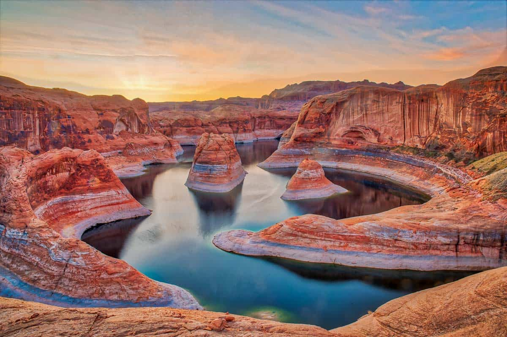
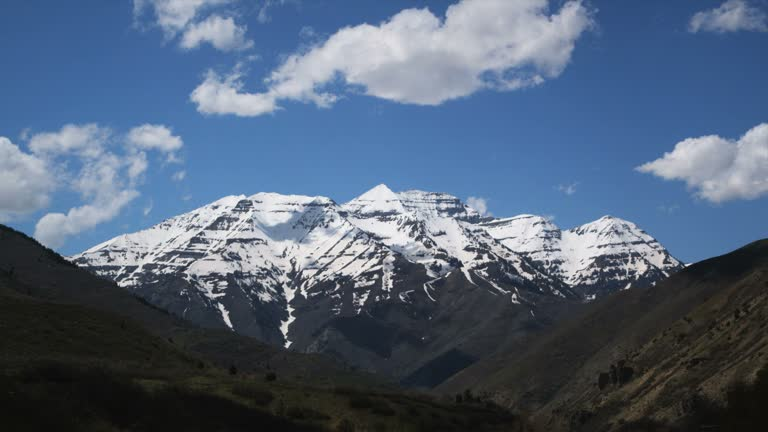

Welcome to Utah, where adventure meets awe in every direction! Whether you’re drawn to the otherworldly red rock landscapes, the snow-capped peaks, or the vibrant culture of Salt Lake City, Utah has something unforgettable for every traveler. Come explore five breathtaking national parks, stargaze under crystal-clear skies, and experience nature like never before!
Utah's beauty lies in its stunning contrasts—towering red rock formations, serene alpine forests, and expansive salt flats that shimmer beneath endless skies. From the surreal landscapes of Arches and Zion to the peaceful stillness of the Great Salt Lake, Utah is a masterpiece of nature. Its raw, majestic terrain inspires awe and adventure at every turn.
Here is an image of the beauty of Utah
This is a stunning image of the snowcapped summit of Mt Timpanogos
Visit the Utah National Parks website for more info